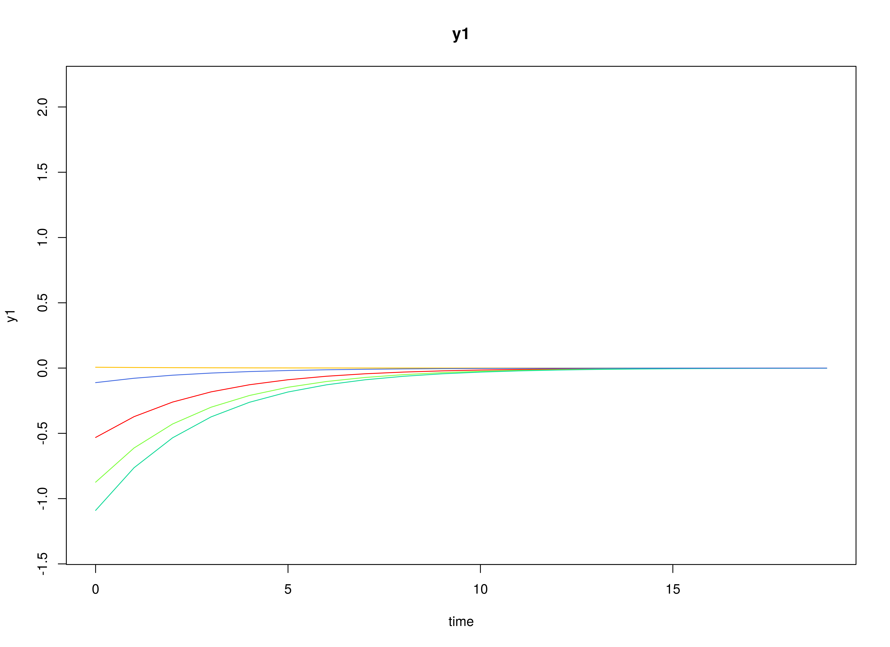
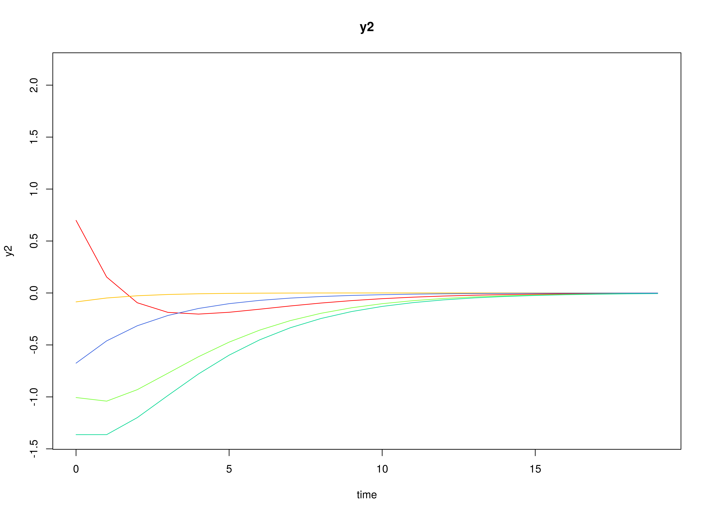
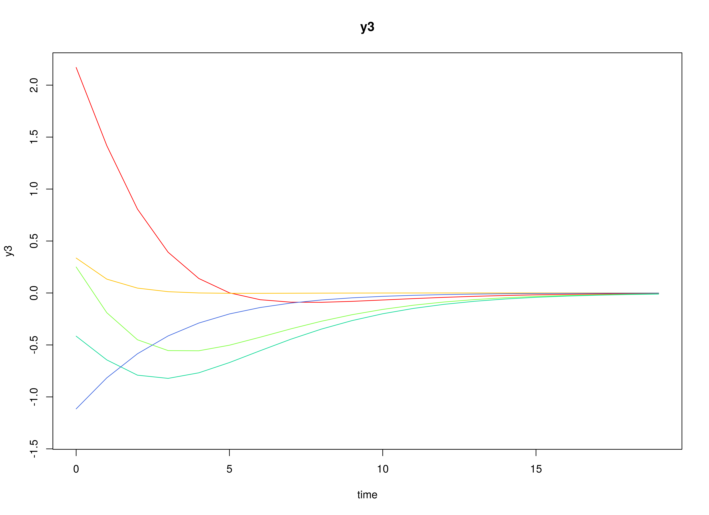
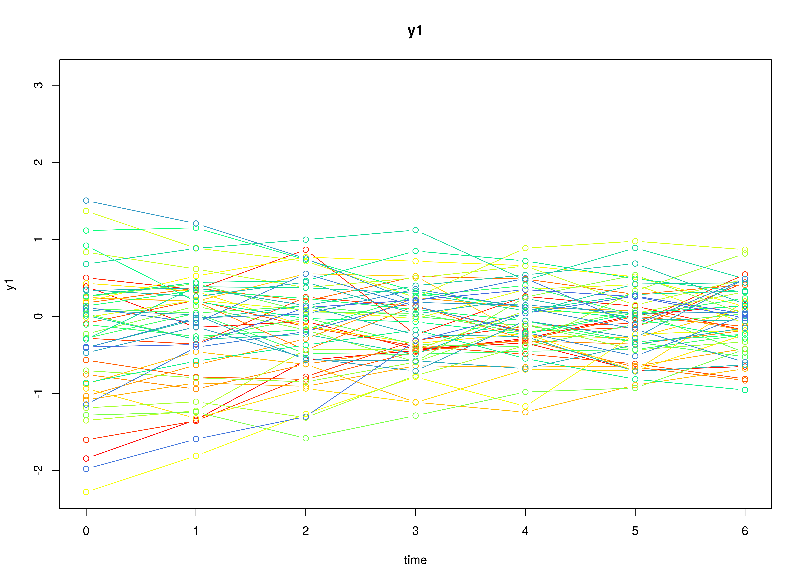
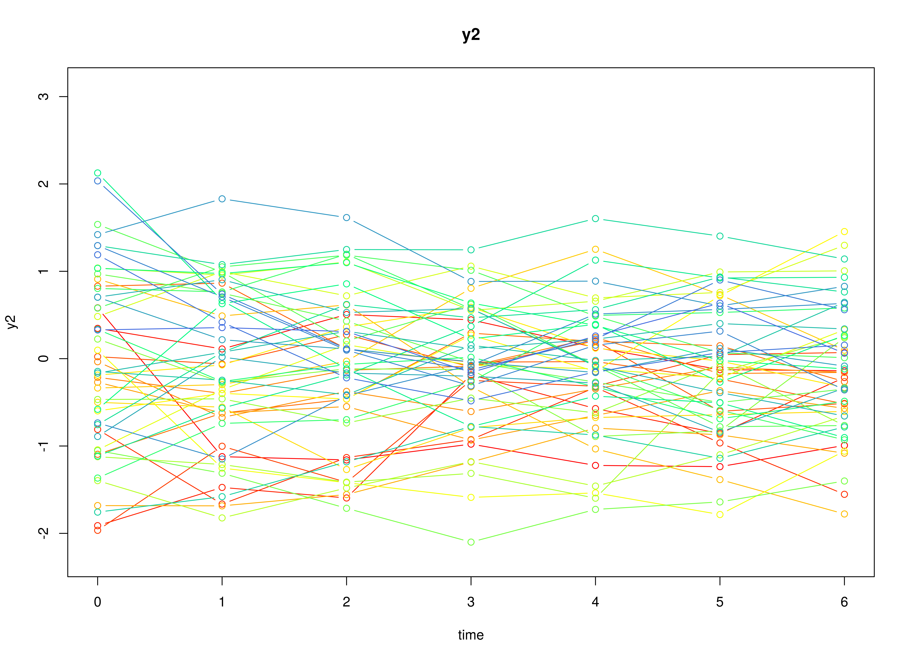
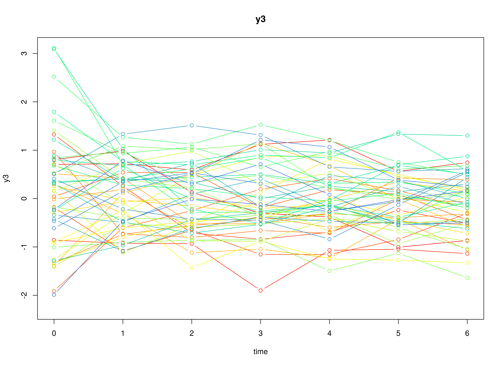

Simulated Data Using Parameters from Deboeck and Preacher 2015
Ivan Jacob Agaloos Pesigan
2024-03-27
Source:vignettes/data.Rmd
data.RmdThis article provides the details on how the data set
deboeck2015 was generated.
Model
The measurement model is given by \[\begin{equation} \mathbf{y}_{i, t} = \boldsymbol{\eta}_{i, t} \end{equation}\] where \(\mathbf{y}_{i, t}\) represents a vector of observed variables and \(\boldsymbol{\eta}_{i, t}\) a vector of latent variables for individual \(i\) and time \(t\). Since the observed and latent variables are equal, we only generate data from the dynamic structure.
The dynamic structure is given by \[\begin{equation} \boldsymbol{\eta}_{i, t} = \boldsymbol{\alpha} + \boldsymbol{\beta} \boldsymbol{\eta}_{i, t - 1} + \boldsymbol{\zeta}_{i, t}, \quad \mathrm{with} \quad \boldsymbol{\zeta}_{i, t} \sim \mathcal{N} \left( \mathbf{0}, \boldsymbol{\Psi} \right) \end{equation}\] where \(\boldsymbol{\eta}_{i, t}\), \(\boldsymbol{\eta}_{i, t - 1}\), and \(\boldsymbol{\zeta}_{i, t}\) are random variables, and \(\boldsymbol{\alpha}\), \(\boldsymbol{\beta}\), and \(\boldsymbol{\Psi}\) are model parameters. Here, \(\boldsymbol{\eta}_{i, t}\) is a vector of latent variables at time \(t\) and individual \(i\), \(\boldsymbol{\eta}_{i, t - 1}\) represents a vector of latent variables at time \(t - 1\) and individual \(i\), and \(\boldsymbol{\zeta}_{i, t}\) represents a vector of dynamic noise at time \(t\) and individual \(i\). \(\boldsymbol{\alpha}\) denotes a vector of intercepts, \(\boldsymbol{\beta}\) a matrix of autoregression and cross regression coefficients, and \(\boldsymbol{\Psi}\) the covariance matrix of \(\boldsymbol{\zeta}_{i, t}\).
An alternative representation of the dynamic noise is given by \[\begin{equation} \boldsymbol{\zeta}_{i, t} = \boldsymbol{\Psi}^{\frac{1}{2}} \mathbf{z}_{i, t}, \quad \mathrm{with} \quad \mathbf{z}_{i, t} \sim \mathcal{N} \left( \mathbf{0}, \mathbf{I} \right) \end{equation}\] where \(\left( \boldsymbol{\Psi}^{\frac{1}{2}} \right) \left( \boldsymbol{\Psi}^{\frac{1}{2}} \right)^{\prime} = \boldsymbol{\Psi}\) .
Data Generation
Notation
Let \(t = 7\) be the number of time points and \(n = 50\) be the number of individuals.
Let the initial condition \(\boldsymbol{\eta}_{0}\) be given by
\[\begin{equation} \boldsymbol{\eta}_{0} \sim \mathcal{N} \left( \boldsymbol{\mu}_{\boldsymbol{\eta} \mid 0}, \boldsymbol{\Sigma}_{\boldsymbol{\eta} \mid 0} \right) \end{equation}\]
\[\begin{equation} \boldsymbol{\mu}_{\boldsymbol{\eta} \mid 0} = \left( \begin{array}{c} 0 \\ 0 \\ 0 \\ \end{array} \right) \end{equation}\]
\[\begin{equation} \boldsymbol{\Sigma}_{\boldsymbol{\eta} \mid 0} = \left( \begin{array}{ccc} 1 & 0.2 & 0.2 \\ 0.2 & 1 & 0.2 \\ 0.2 & 0.2 & 1 \\ \end{array} \right) . \end{equation}\]
Let the constant vector \(\boldsymbol{\alpha}\) be given by
\[\begin{equation} \boldsymbol{\alpha} = \left( \begin{array}{c} 0 \\ 0 \\ 0 \\ \end{array} \right) . \end{equation}\]
Let the transition matrix \(\boldsymbol{\beta}\) be given by
\[\begin{equation} \boldsymbol{\beta} = \left( \begin{array}{ccc} 0.7 & 0 & 0 \\ 0.5 & 0.6 & 0 \\ -0.1 & 0.4 & 0.5 \\ \end{array} \right) . \end{equation}\]
Let the dynamic process noise \(\boldsymbol{\Psi}\) be given by
\[\begin{equation} \boldsymbol{\Psi} = \left( \begin{array}{ccc} 0.1 & 0 & 0 \\ 0 & 0.1 & 0 \\ 0 & 0 & 0.1 \\ \end{array} \right) . \end{equation}\]
R Function Arguments
n
#> [1] 50
time
#> [1] 7
mu0
#> [1] 0 0 0
sigma0
#> [,1] [,2] [,3]
#> [1,] 1.0 0.2 0.2
#> [2,] 0.2 1.0 0.2
#> [3,] 0.2 0.2 1.0
sigma0_l
#> [,1] [,2] [,3]
#> [1,] 1.0 0.0000000 0.0000000
#> [2,] 0.2 0.9797959 0.0000000
#> [3,] 0.2 0.1632993 0.9660918
alpha
#> [1] 0 0 0
beta
#> [,1] [,2] [,3]
#> [1,] 0.7 0.0 0.0
#> [2,] 0.5 0.6 0.0
#> [3,] -0.1 0.4 0.5
psi
#> [,1] [,2] [,3]
#> [1,] 0.1 0.0 0.0
#> [2,] 0.0 0.1 0.0
#> [3,] 0.0 0.0 0.1
psi_l
#> [,1] [,2] [,3]
#> [1,] 0.3162278 0.0000000 0.0000000
#> [2,] 0.0000000 0.3162278 0.0000000
#> [3,] 0.0000000 0.0000000 0.3162278Visualizing the Dynamics Without Process Noise (n = 5 with Different Initial Condition)



Using the SimSSMVARFixed Function from the simStateSpace Package to Simulate Data
library(simStateSpace)
sim <- SimSSMVARFixed(
n = n,
time = time,
mu0 = mu0,
sigma0_l = sigma0_l,
alpha = alpha,
beta = beta,
psi_l = psi_l
)
data <- as.data.frame(sim)
head(data)
#> id time y1 y2 y3
#> 1 1 0 -1.84569501 0.5815402 0.8057225
#> 2 1 1 -1.34252674 -1.1219724 0.9873906
#> 3 1 2 -0.57123433 -1.1591679 0.1280274
#> 4 1 3 -0.44448720 -0.9783200 -0.3028425
#> 5 1 4 -0.28796224 -1.2222325 -0.3807219
#> 6 1 5 0.01622801 -1.2362032 -1.0056038
plot(sim)


colnames(data) <- c(
"id",
"time",
"x",
"m",
"y"
)
dim(data)
#> [1] 350 5
head(data)
#> id time x m y
#> 1 1 0 -1.84569501 0.5815402 0.8057225
#> 2 1 1 -1.34252674 -1.1219724 0.9873906
#> 3 1 2 -0.57123433 -1.1591679 0.1280274
#> 4 1 3 -0.44448720 -0.9783200 -0.3028425
#> 5 1 4 -0.28796224 -1.2222325 -0.3807219
#> 6 1 5 0.01622801 -1.2362032 -1.0056038
deboeck2015 <- data